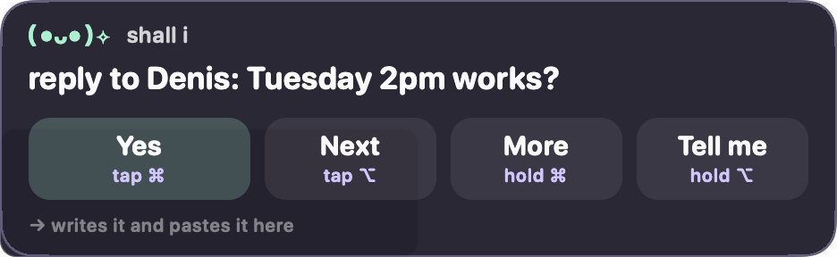
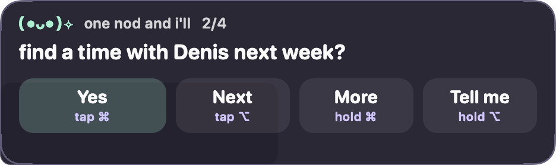

You nod.
It's done.
A little face in your menu bar that notices what you're trying to do, offers the next step in one line, and does it when you tap ⌘. No prompt box. No chat.

one line, one key
How it works
Nod reads the room on your Mac, says one line, and acts the moment you agree.
It reads the room, on your Mac
Front app, window title, your selection, the text on screen (OCR'd locally), the clipboard, your last few app switches, your calendar. Passwords and denylisted apps are never read. Everything is redacted before any of it leaves.
It says one line
A first guess appears instantly, a specific one in under a second, the full one with alternatives and a ready action about a second later. Under the question it tells you exactly what yes will do.
You nod. It does the thing
Tap ⌘ and the draft is pasted, the reminder set, the event added, the brief handed to ChatGPT or Claude. The output is pre-written while you decide, so yes is instant.
Five keys. No mouse.
Every button on the card shows its key underneath. All of them can be re-recorded in Settings.
Or say "hey Nod, remind me at three". Speech is recognised on the Mac; audio is never stored or sent anywhere.
What it can do
Each suggestion comes with a ready action. These are the ones built in today.
See it
What leaves your Mac
Only redacted text, only to the Claude API, only with your own key. You can read every payload.
Stays on the Mac
- Screenshots and OCR (Apple Vision, local)
- Audio for "hey Nod" (on-device recognition)
- Your API key (macOS Keychain)
- The log, your labels, memory, journal (Application Support)
- Anything from password fields or denylisted apps: never collected
Goes to the Claude API
- Redacted text from the front window, selection, clipboard
- Card numbers, SSNs, keys and passwords masked first
- Never an image, except inside computer-use after you say yes
- Menu bar › "What left this Mac today…" shows every payload sent
- Pause stops all collection
Install
Two minutes. You'll need an Anthropic API key from console.anthropic.com.
- Download and unzip, then drag Nod.app into Applications.
- Open it once with a right-click › Open. If macOS says it cannot verify the developer: System Settings › Privacy & Security › scroll down › Open Anyway, then open Nod again.
- Paste your API key in the onboarding window. It goes into your Keychain and nowhere else.
- Grant permissions: Accessibility and Screen Recording (to read the front window). Microphone and Speech Recognition only if you want to talk to it.
- Switch apps. The pill in the corner will offer a line. Tap ⌘.